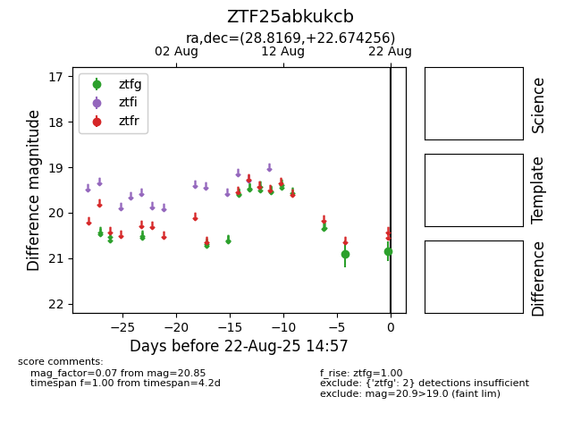

Target ZTF25abkukcb at 2025-08-22 14:57, see:
FINK: fink-portal.org/ZTF25abkukcb
Lasair: lasair-ztf.lsst.ac.uk/objects/ZTF25abkukcb
ALeRCE: alerce.online/object/ZTF25abkukcb
alt names
ZTF25abkukcb (ztf,alerce)
coordinates:
equatorial (ra, dec) = (28.8169,+22.67426)
galactic (l, b) = (141.6747,-37.86334)
photometry
last ztfg=20.85
2 ztfg detections
